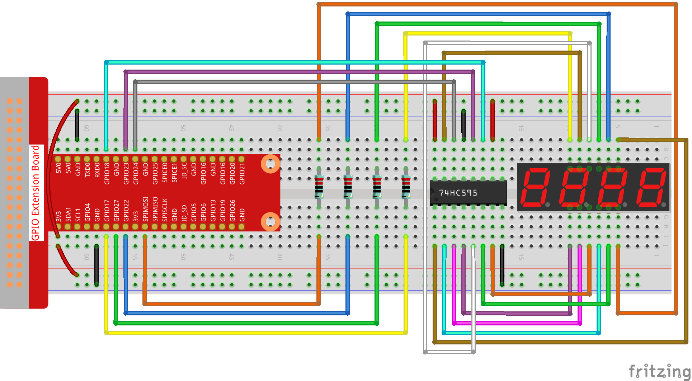

Nota
Ciao e benvenuto nella SunFounder Raspberry Pi & Arduino & ESP32 Enthusiasts Community su Facebook! Unisciti a noi per esplorare in profondità Raspberry Pi, Arduino ed ESP32 insieme ad altri appassionati.
Perché unirsi?
Supporto esperto: Risolvi problematiche post-vendita e sfide tecniche con l’aiuto della nostra community e del nostro team.
Impara e condividi: Scambia suggerimenti e tutorial per migliorare le tue competenze.
Anteprime esclusive: Ottieni l’accesso anticipato agli annunci dei nuovi prodotti.
Sconti speciali: Approfitta di sconti esclusivi sui nostri prodotti più recenti.
Promozioni festive e omaggi: Partecipa a omaggi e promozioni speciali per le festività.
üëâ Pronto a esplorare e creare con noi? Clicca su [Qui] e unisciti oggi stesso!
1.1.5 Display a 7 segmenti a 4 cifre
Introduzione
Ora ti mostrerò come controllare un display a 7 segmenti a 4 cifre.
Componenti

Principio
Display a 7 segmenti a 4 cifre
Il display a 7 segmenti a 4 cifre è composto da quattro display a 7 segmenti che funzionano insieme.

Il display a 7 segmenti a 4 cifre funziona in modo indipendente. Utilizza il principio della persistenza visiva umana per visualizzare rapidamente i caratteri di ciascun segmento in loop, formando stringhe continue.
Ad esempio, quando si visualizza «1234», viene mostrato «1» sul primo segmento, mentre «234» non viene visualizzato. Dopo un po’ di tempo, il secondo segmento mostra «2», mentre gli altri sono spenti. Questo processo si ripete molto rapidamente (tipicamente 5 ms), e grazie all’effetto dell’afterscattering ottico e alla persistenza visiva, possiamo percepire i quattro caratteri simultaneamente.

Codici di visualizzazione
Per comprendere come i display a 7 segmenti (Catodo Comune) visualizzano i numeri, abbiamo preparato la seguente tabella. I numeri rappresentano il valore visualizzato (0-F); DP GFEDCBA si riferisce ai LED corrispondenti impostati su 0 o 1. Ad esempio, 11000000 indica che DP e G sono impostati su 1, mentre gli altri sono su 0, visualizzando così il numero 0 sul display. Il Codice HEX corrisponde al numero esadecimale.

Schema
T-Board Name |
physical |
wiringPi |
BCM |
GPIO17 |
Pin 11 |
0 |
17 |
GPIO27 |
Pin 13 |
2 |
27 |
GPIO22 |
Pin 15 |
3 |
22 |
SPIMOSI |
Pin 19 |
12 |
10 |
GPIO18 |
Pin 12 |
1 |
18 |
GPIO23 |
Pin 16 |
4 |
23 |
GPIO24 |
Pin 18 |
5 |
24 |
Procedure sperimentale
Passo 1: Costruisci il circuito.
{kind=link}
Per utenti del linguaggio C
Passo 2: Vai alla cartella del codice.
cd ~/davinci-kit-for-raspberry-pi/c/1.1.5/
Passo 3: Compila il codice.
gcc 1.1.5_4-Digit.c -lwiringPi
Passo 4: Esegui il file eseguibile.
sudo ./a.out
Dopo l’esecuzione del codice, il programma avvia un conteggio, aumentando di 1 ogni secondo, e il display a 4 cifre mostrerà il conteggio.
Nota
Se non funziona dopo l’esecuzione o compare un messaggio d’errore come "wiringPi.h: No such file or directory", consulta Il codice C non funziona?.
Codice
#include <wiringPi.h>
#include <stdio.h>
#include <wiringShift.h>
#include <signal.h>
#include <unistd.h>
#define SDI 5
#define RCLK 4
#define SRCLK 1
const int placePin[] = {12, 3, 2, 0};
unsigned char number[] = {0xc0, 0xf9, 0xa4, 0xb0, 0x99, 0x92, 0x82, 0xf8, 0x80, 0x90};
int counter = 0;
void pickDigit(int digit)
{
for (int i = 0; i < 4; i++)
{
digitalWrite(placePin[i], 0);
}
digitalWrite(placePin[digit], 1);
}
void hc595_shift(int8_t data)
{
int i;
for (i = 0; i < 8; i++)
{
digitalWrite(SDI, 0x80 & (data << i));
digitalWrite(SRCLK, 1);
delayMicroseconds(1);
digitalWrite(SRCLK, 0);
}
digitalWrite(RCLK, 1);
delayMicroseconds(1);
digitalWrite(RCLK, 0);
}
void clearDisplay()
{
int i;
for (i = 0; i < 8; i++)
{
digitalWrite(SDI, 1);
digitalWrite(SRCLK, 1);
delayMicroseconds(1);
digitalWrite(SRCLK, 0);
}
digitalWrite(RCLK, 1);
delayMicroseconds(1);
digitalWrite(RCLK, 0);
}
void loop()
{
while(1){
clearDisplay();
pickDigit(0);
hc595_shift(number[counter % 10]);
clearDisplay();
pickDigit(1);
hc595_shift(number[counter % 100 / 10]);
clearDisplay();
pickDigit(2);
hc595_shift(number[counter % 1000 / 100]);
clearDisplay();
pickDigit(3);
hc595_shift(number[counter % 10000 / 1000]);
}
}
void timer(int timer1)
{
if (timer1 == SIGALRM)
{
counter++;
alarm(1);
printf("%d\n", counter);
}
}
void main(void)
{
if (wiringPiSetup() == -1)
{
printf("setup wiringPi failed !");
return;
}
pinMode(SDI, OUTPUT);
pinMode(RCLK, OUTPUT);
pinMode(SRCLK, OUTPUT);
for (int i = 0; i < 4; i++)
{
pinMode(placePin[i], OUTPUT);
digitalWrite(placePin[i], HIGH);
}
signal(SIGALRM, timer);
alarm(1);
loop();
}
Spiegazione del Codice
const int placePin[] = {12, 3, 2, 0};
Questi quattro pin controllano i pin di anodo comune dei display a 7 segmenti a quattro cifre.
unsigned char number[] = {0xc0, 0xf9, 0xa4, 0xb0, 0x99, 0x92, 0x82, 0xf8, 0x80, 0x90};
Un array di codici segmenti da 0 a 9 in esadecimale (anodo comune).
void pickDigit(int digit)
{
for (int i = 0; i < 4; i++)
{
digitalWrite(placePin[i], 0);
}
digitalWrite(placePin[digit], 1);
}
Seleziona la posizione del valore: ogni volta deve essere abilitata una sola posizione. La posizione abilitata sarà impostata su HIGH.
void loop()
{
while(1){
clearDisplay();
pickDigit(0);
hc595_shift(number[counter % 10]);
clearDisplay();
pickDigit(1);
hc595_shift(number[counter % 100 / 10]);
clearDisplay();
pickDigit(2);
hc595_shift(number[counter % 1000 / 100]);
clearDisplay();
pickDigit(3);
hc595_shift(number[counter % 10000 / 1000]);
}
}
La funzione imposta il numero visualizzato sul display a 7 segmenti a 4 cifre.
clearDisplay(): scrive 11111111 per spegnere gli otto LED sul display a 7 segmenti, cancellando così il contenuto visualizzato.pickDigit(0): seleziona il quarto display a 7 segmenti.hc595_shift(number[counter % 10]): visualizza il numero nelle unità del contatore sul quarto segmento.
signal(SIGALRM, timer);
Questa è una funzione fornita dal sistema, il cui prototipo di codice è:
sig_t signal(int signum,sig_t handler);
Dopo l’esecuzione di signal(), una volta che il processo riceve il segnale corrispondente a signum (in questo caso SIGALRM), sospende immediatamente il compito corrente per processare la funzione impostata (in questo caso timer(sig)).
alarm(1);
Questa è anche una funzione fornita dal sistema. Il prototipo del codice è:
unsigned int alarm (unsigned int seconds);
Genera un segnale SIGALRM dopo un determinato numero di secondi.
void timer(int timer1)
{
if (timer1 == SIGALRM)
{
counter++;
alarm(1);
printf("%d\n", counter);
}
}
Utilizziamo le funzioni sopra per implementare la funzione timer.
Dopo che alarm() genera il segnale SIGALRM, viene chiamata la funzione timer. Aggiunge 1 al contatore, e la funzione alarm(1) sarà richiamata ogni secondo.
Per gli utenti Python
Passo 2: Vai alla cartella del codice.
cd ~/davinci-kit-for-raspberry-pi/python/
Passo 3: Esegui il file eseguibile.
sudo python3 1.1.5_4-Digit.py
Dopo l’esecuzione del codice, il programma inizia un conteggio, aumentando di 1 ogni secondo, e il display a 4 cifre visualizza il conteggio.
Codice
Nota
È possibile Modificare/Reimpostare/Copiare/Eseguire/Interrompere il codice riportato di seguito. Prima di procedere, assicurarsi di accedere al percorso del codice sorgente come davinci-kit-for-raspberry-pi/python.
import RPi.GPIO as GPIO
import time
import threading
SDI = 24
RCLK = 23
SRCLK = 18
placePin = (10, 22, 27, 17)
number = (0xc0, 0xf9, 0xa4, 0xb0, 0x99, 0x92, 0x82, 0xf8, 0x80, 0x90)
counter = 0
timer1 = 0
def clearDisplay():
for i in range(8):
GPIO.output(SDI, 1)
GPIO.output(SRCLK, GPIO.HIGH)
GPIO.output(SRCLK, GPIO.LOW)
GPIO.output(RCLK, GPIO.HIGH)
GPIO.output(RCLK, GPIO.LOW)
def hc595_shift(data):
for i in range(8):
GPIO.output(SDI, 0x80 & (data << i))
GPIO.output(SRCLK, GPIO.HIGH)
GPIO.output(SRCLK, GPIO.LOW)
GPIO.output(RCLK, GPIO.HIGH)
GPIO.output(RCLK, GPIO.LOW)
def pickDigit(digit):
for i in placePin:
GPIO.output(i,GPIO.LOW)
GPIO.output(placePin[digit], GPIO.HIGH)
def timer():
global counter
global timer1
timer1 = threading.Timer(1.0, timer)
timer1.start()
counter += 1
print("%d" % counter)
def loop():
global counter
while True:
clearDisplay()
pickDigit(0)
hc595_shift(number[counter % 10])
clearDisplay()
pickDigit(1)
hc595_shift(number[counter % 100//10])
clearDisplay()
pickDigit(2)
hc595_shift(number[counter % 1000//100])
clearDisplay()
pickDigit(3)
hc595_shift(number[counter % 10000//1000])
def setup():
GPIO.setmode(GPIO.BCM)
GPIO.setup(SDI, GPIO.OUT)
GPIO.setup(RCLK, GPIO.OUT)
GPIO.setup(SRCLK, GPIO.OUT)
for i in placePin:
GPIO.setup(i, GPIO.OUT)
global timer1
timer1 = threading.Timer(1.0, timer)
timer1.start()
def destroy(): # Quando si preme "Ctrl+C", viene eseguita la funzione.
global timer1
GPIO.cleanup()
timer1.cancel() # cancella il timer
if __name__ == '__main__': # Programma che inizia da qui
setup()
try:
loop()
except KeyboardInterrupt:
destroy()
Spiegazione del Codice
placePin = (10, 22, 27, 17)
Questi quattro pin controllano i pin di anodo comune dei display a 7 segmenti a quattro cifre.
number = (0xc0, 0xf9, 0xa4, 0xb0, 0x99, 0x92, 0x82, 0xf8, 0x80, 0x90)
Un array di codici di segmenti da 0 a 9 in esadecimale (anodo comune).
def clearDisplay():
for i in range(8):
GPIO.output(SDI, 1)
GPIO.output(SRCLK, GPIO.HIGH)
GPIO.output(SRCLK, GPIO.LOW)
GPIO.output(RCLK, GPIO.HIGH)
GPIO.output(RCLK, GPIO.LOW)
Scrive «1» otto volte in SDI, in modo che i segmenti del display a 7 segmenti si spengano per cancellare il contenuto visualizzato.
def pickDigit(digit):
for i in placePin:
GPIO.output(i,GPIO.LOW)
GPIO.output(placePin[digit], GPIO.HIGH)
Seleziona la posizione del valore: ogni volta deve essere abilitata una sola posizione, che viene impostata su HIGH.
def loop():
global counter
while True:
clearDisplay()
pickDigit(0)
hc595_shift(number[counter % 10])
clearDisplay()
pickDigit(1)
hc595_shift(number[counter % 100//10])
clearDisplay()
pickDigit(2)
hc595_shift(number[counter % 1000//100])
clearDisplay()
pickDigit(3)
hc595_shift(number[counter % 10000//1000])
La funzione imposta il numero visualizzato sul display a 7 segmenti a 4 cifre.
Prima, si accende il quarto segmento e si scrive la cifra delle unità. Poi si accende il terzo segmento e si scrive la cifra delle decine; dopo, si accendono rispettivamente il secondo e il primo segmento per le cifre delle centinaia e delle migliaia. Poiché la velocità di aggiornamento è molto rapida, vediamo un display a quattro cifre completo.
timer1 = threading.Timer(1.0, timer)
timer1.start()
Il modulo threading è il modulo comune per i thread in Python, e Timer è una sua sottoclasse. Il prototipo del codice è:
class threading.Timer(interval, function, args=[], kwargs={})
Dopo l’intervallo, la funzione verrà eseguita. Qui, l’intervallo è 1.0, e la funzione è timer(). start() significa che il Timer partirà in questo momento.
def timer():
global counter
global timer1
timer1 = threading.Timer(1.0, timer)
timer1.start()
counter += 1
print("%d" % counter)
Dopo che Timer raggiunge 1,0 secondi, viene chiamata la funzione Timer; viene aggiunto 1 al contatore, e Timer viene riutilizzato per eseguire se stesso ripetutamente ogni secondo.
Immagine del Fenomeno